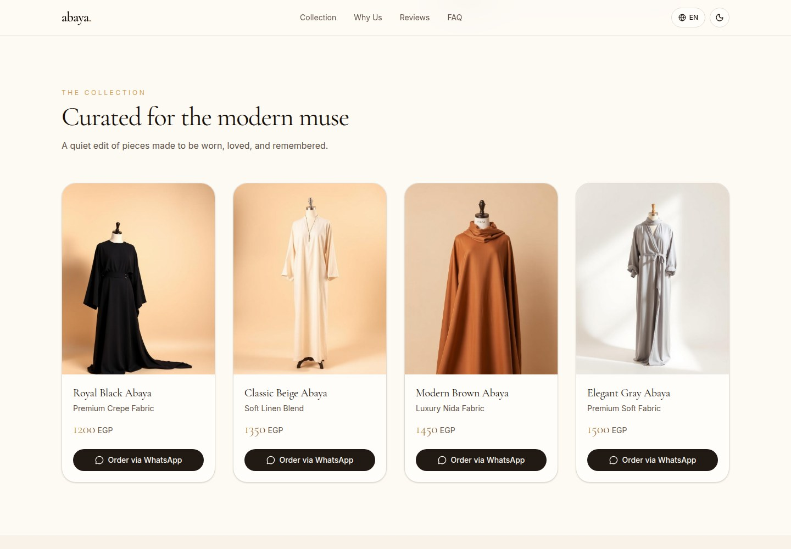
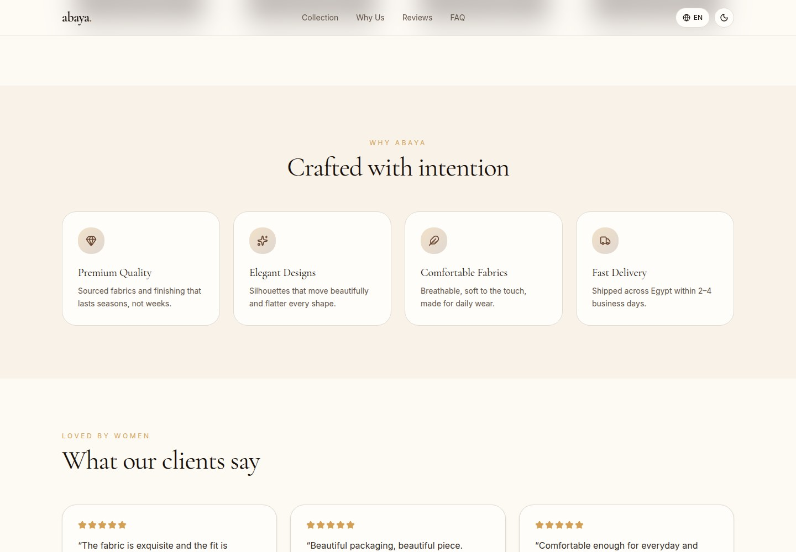
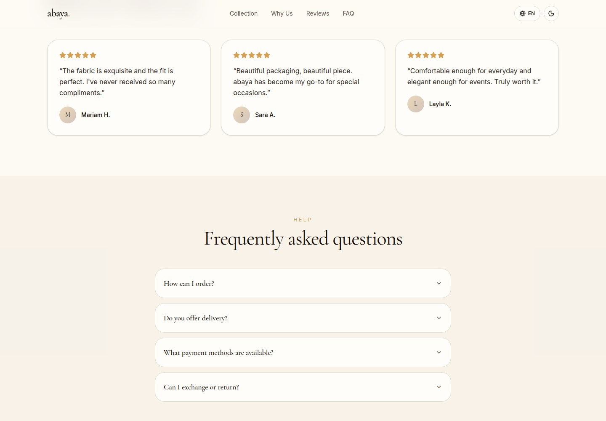
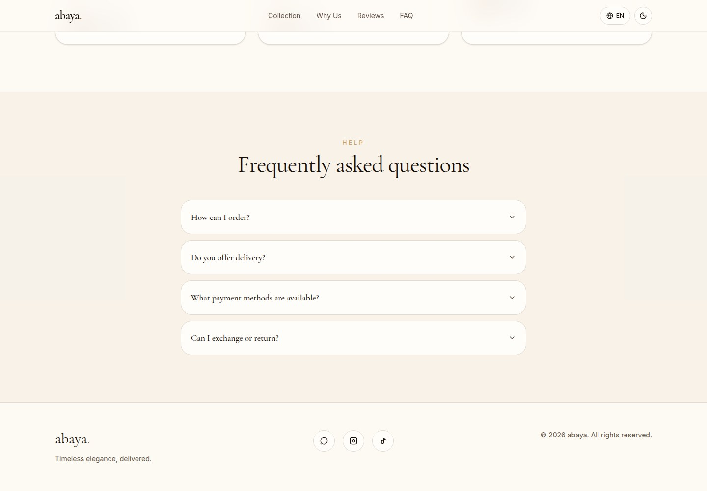
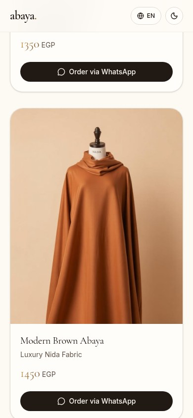
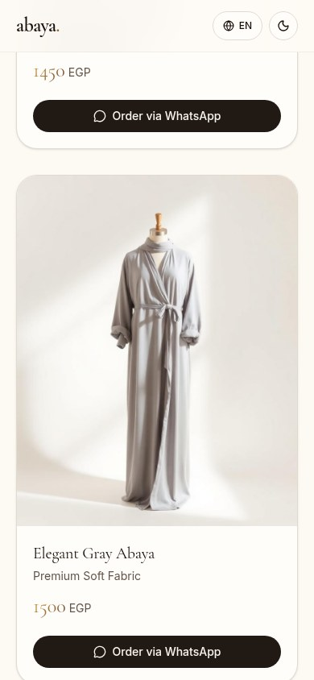
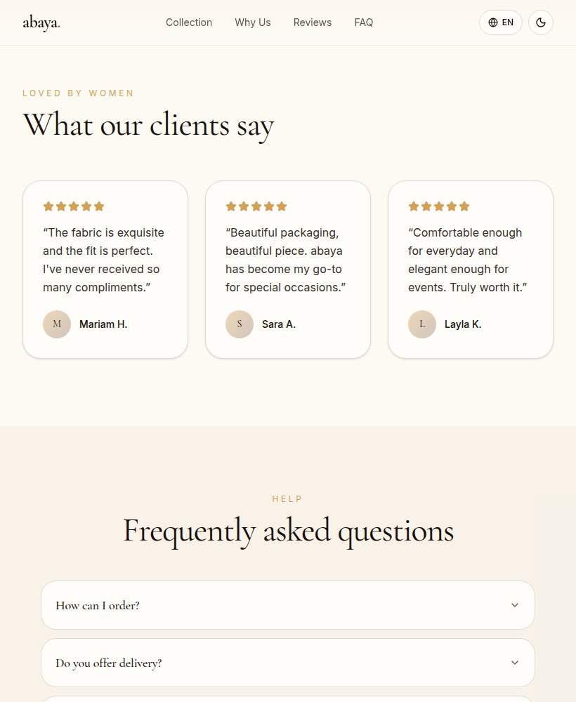
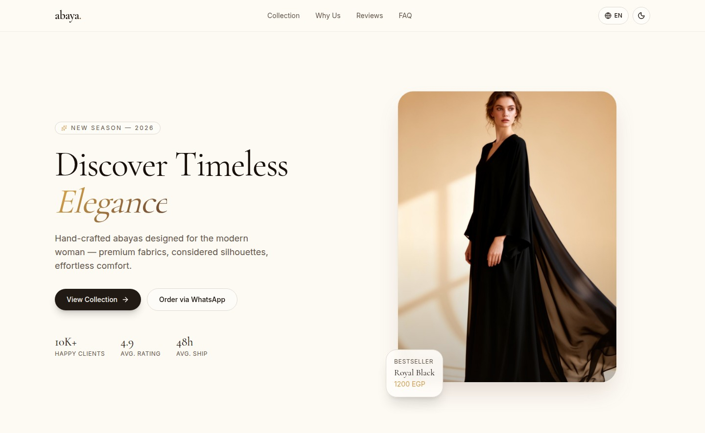
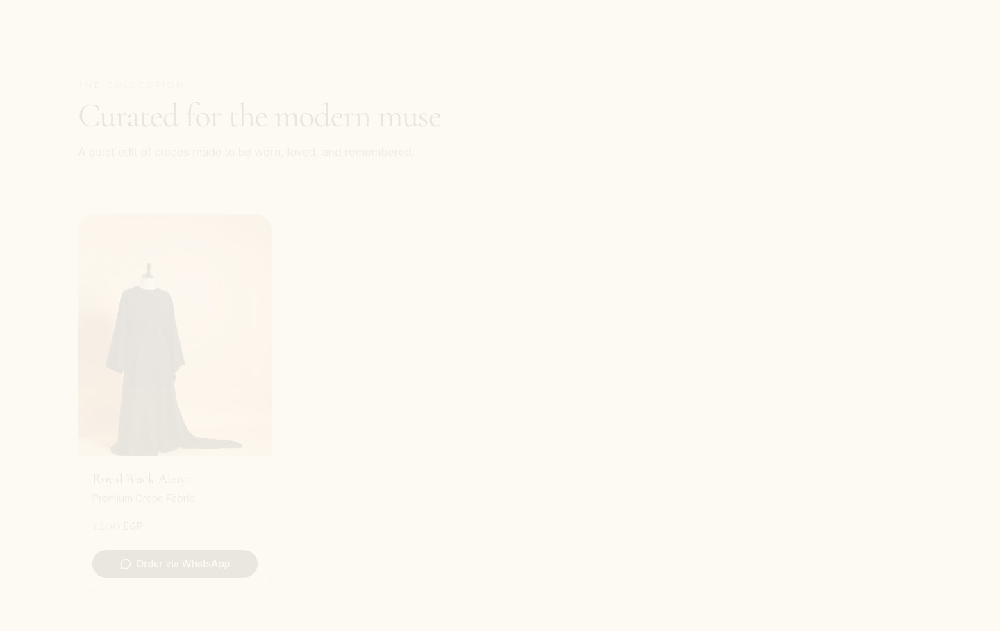
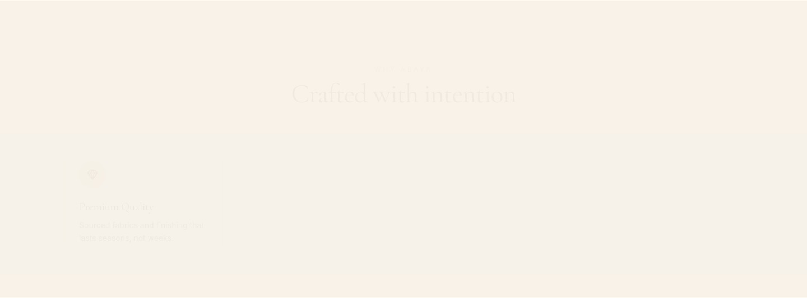

Abaya
Elegance, made to move with you.

WHAT IT IS
Abaya clothing retail / modest-fashion boutique
Presents a small abaya collection with product imagery, fabric descriptions, EGP prices, and WhatsApp order links. The homepage describes the garments as hand-crafted for modern women. This describes the site's offer, not independently verified business operations.
This case study documents what the linked website presents. Individual contribution to this project has not been confirmed.
WHAT THE WEBSITE OFFERS
- Single-page homepage with in-page navigation to Collection, Why Us, Reviews, and FAQ sections.
- Four visually presented abaya products, each with an image, name, fabric description, EGP price, and an Order via WhatsApp link.
- WhatsApp product links include a prefilled message referring to the selected garment; links were inspected but not followed.
- Expandable FAQ items reveal answers about ordering, delivery, payment, and exchanges/returns.
- English/Arabic language control changes visible navigation, headings, product copy, and direction/layout; some displayed stat labels and hero/product labels remain in English in Arabic mode.
- Theme control visibly switches between the light and dark palettes.
- A Why Us section presents four benefit cards: Premium Quality, Elegant Designs, Comfortable Fabrics, and Fast Delivery.
- Reviews section displays three named testimonial cards with five-star icon rows.
VISITOR JOURNEY
Use Collection in the header or View Collection in the hero to jump to #collection and browse the four product cards.
AUTHENTIC SCREEN CAPTURES · 11
Inside the experience.
Genuine, distinct screen captures supplied for this project. No screenshots have been fabricated or duplicated.









